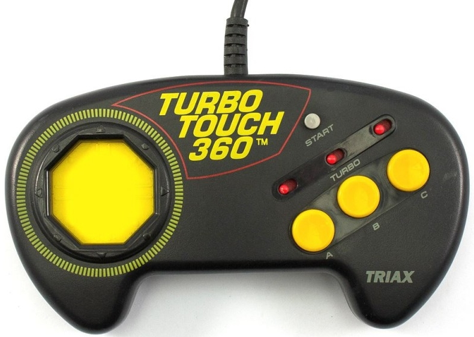
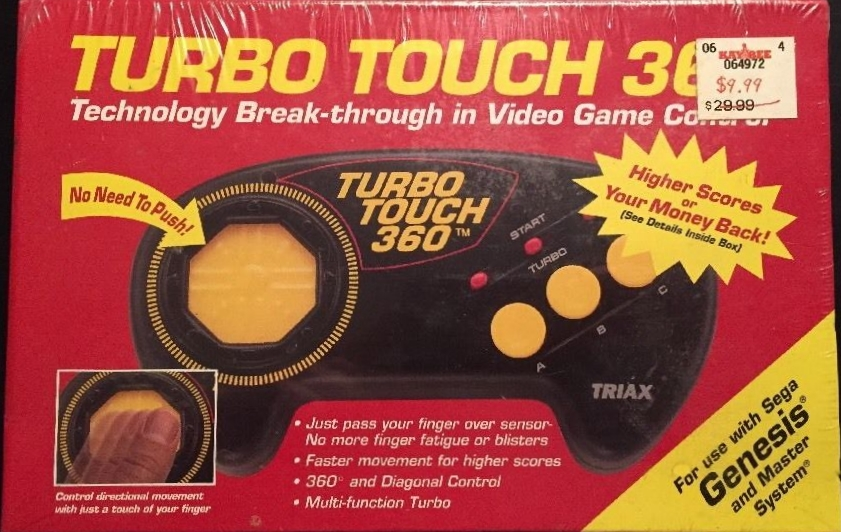

Turbo Touch 360
The D-pad replacement that swapped mechanical switches for a sliding capacitive touch plate

Overview
The Turbo Touch 360 was a line of aftermarket third-party controllers made by Triax for the Nintendo Entertainment System, Super NES, and Sega Genesis (the Genesis version also worked with Atari and Commodore systems), released in North America in 1992 at $34.95. Where most controllers used a D-pad with mechanical switches, the Turbo Touch replaced the whole directional surface with an octagonal plate of eight capacitive touch sensors arranged in the cardinal directions, covered by a smooth low-friction membrane. The player slid a thumb across the surface to steer; because the sensors detected the thumb's presence capacitively, no downward force was required. Despite the '360' name, the controller only produced digital input along the eight compass directions.
The motivation was explicitly medical: Triax marketed the controller as a cure for the thumb injuries and fatigue that marathon play could cause. The claim of reducing blisters and 'numb thumb' was endorsed by Dr. Robert Grossman, an orthopedic surgeon specializing in sports injuries. The mechanism was documented in Triax's own patent US5367199, 'Sliding contact control switch pad,' filed 1992-09-15 with priority to 1992-05-01 — a capacitive sensing scheme with a central 'null zone' where the thumb rests. Nakitek later reused the technology in the Turbo Touch 360+.
The controller was first shown at CES in 1993, but the technology never displaced the D-pad in later consoles: reviewers found the touch surface overly sensitive and uncomfortable. IGN editor Craig Harris ranked the Turbo Touch 360 the ninth-worst video game controller of all time in 2006. Sega Retro also records that Triax reportedly offered 'big', three-foot versions of the controller for $2,000 — whether a serious product or a marketing ploy is unknown.
Deep dive
The central idea was that a directional controller should not require force. The octagonal plate reads where your thumb is, not how hard you push: eight capacitive sensors arranged radially detect the thumb's presence in their vicinity, and straddling two adjacent sensors produces a diagonal signal. This is the same sensing principle as the laptop trackpad, applied to a game controller in 1992 — a full decade before touch surfaces became ordinary. The claimed advantage was comfort: no mechanical travel, no switch fatigue, no 'numb thumb.' The real-world result was a plate so sensitive that games read accidental input, and the D-pad never went away.
The name promised continuous 360-degree control, but the hardware was digital: eight touch zones mapped to the same eight directions a mechanical D-pad produces. Most Mega Drive games only respond to eight directions anyway, so the mismatch was mostly marketing — but the gap between the name and the mechanism became part of the artifact's story, and part of why reviewers and players found the claim suspect.
Triax's medical framing was unusually explicit for a game peripheral: the box touted relief from blisters and 'numb thumb,' and Dr. Robert Grossman, an orthopedic surgeon specializing in sports injuries, endorsed the design. This was consumer health marketing applied to an input device — a strange precursor to the ergonomic-gaming industry of the 2010s, and a reminder that the D-pad's 1982 design had never really been interrogated for its physical cost until someone tried to sell against it.
The Turbo Touch 360 is the museum's only touch-surface game controller. It sits apart from the HP-150's resistive touchscreen (a pointing surface on a screen), the Casio PB-1000's fixed touch zones, and the Sharp Wizard's transparent overlay grid — all touch grids, none a thumb-slid proximity plate. The capacitive sliding scheme, the health claims, the IGN notoriety, and the $2,000 giant-controller rumor make it one of the strangest consumer input experiments of the early 1990s.
Team & pioneers
- Triax Technologies. Manufacturer of the Turbo Touch 360 for NES, SNES, and Genesis; patented the capacitive sliding control pad (US5367199).
- Dr. Robert Grossman. Orthopedic surgeon who endorsed the controller's claims of reducing thumb strain.
- Nakitek. Licensed the technology for the Turbo Touch 360+ follow-up.
Media

